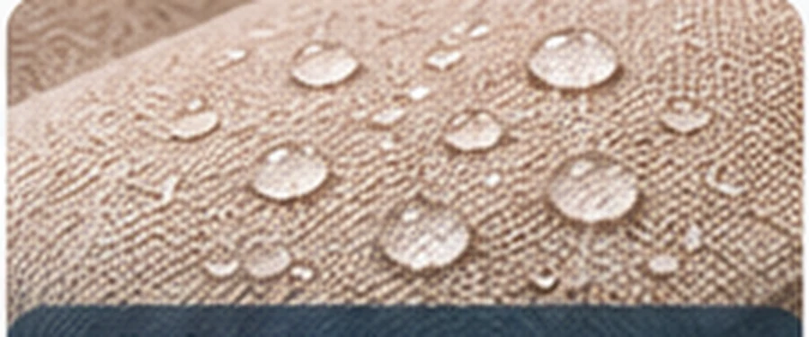
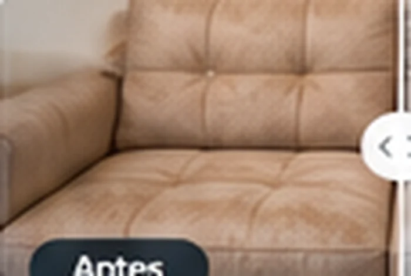
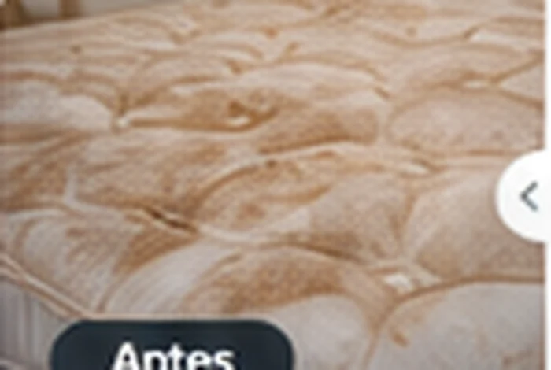
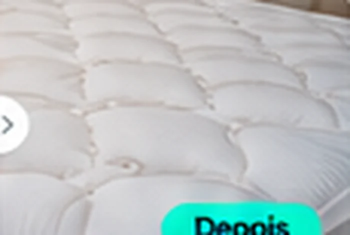
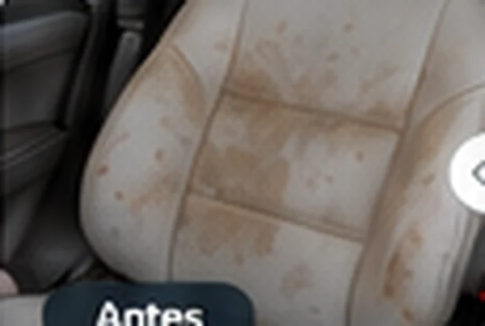
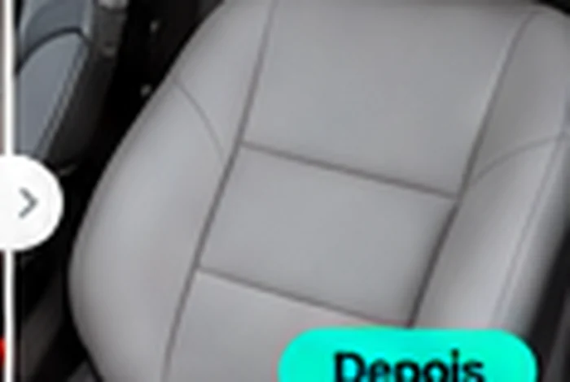

Seu estofado limpo.
Sua casa mais leve.
Limpeza profunda, cuidado com seus tecidos e proteção contra manchas. Seu conforto merece atenção profissional.
NOSSOS SERVIÇOS
Cuidado completo para seus estofados
Descubra as soluções de higienização e proteção para a sua casa, empresa ou veículo.

COMO FUNCIONA
É simples, rápido
e prático.
Escolha sua cidade
Encontre a unidade da sua região.
Peça uma avaliação
Tire dúvidas pelo WhatsApp local.
Agende o atendimento
Combine dia, horário e serviço.
ENCONTRE SUA UNIDADE
A Global Clean na sua cidade.
Pesquise seu município, confirme a unidade responsável e fale diretamente com a equipe local.
Selecione sua cidade
Mostraremos qual unidade atende a localidade informada, com o contato correto.
Nenhuma cidade selecionadaCidades cadastradas
Contatos obtidos das páginas oficiais. Para números com inconsistências, mostramos a página de origem e não encaminhamos automaticamente.
RESULTADOS
Veja a diferença
nos detalhes.
Arraste a divisória para comparar as imagens ilustrativas de antes e depois.





POR QUE ESCOLHER A GLOBAL CLEAN?
Qualidade, confiança
e cuidado em cada detalhe.
Uma experiência mais prática para você e um cuidado especializado para os seus estofados.
em domicílio
especializada
biodegradáveis*
com seus tecidos
QUEM SOMOS
Global Clean Brasil
A Global Clean atua com higienização e impermeabilização de estofados, com equipes e atendimento em diversas regiões brasileiras. A marca apresenta mais de 10 anos de experiência em seu site oficial.
- Serviço realizado no conforto de casa
- Rede de unidades locais
- Higienização e blindagem conforme o tecido
EXPERIÊNCIAS DE CLIENTES
Confiança construída em cada atendimento
Comentários reais devem ser publicados com identificação da fonte e autorização, sem avaliações inventadas.
Atendimento próximo
Converse diretamente com uma equipe que atende a sua região.
Serviços explicados
Tire dúvidas sobre o tecido, o processo e a secagem antes de agendar.
Praticidade
Solicite uma avaliação para realizar o serviço em seu endereço.
DÚVIDAS FREQUENTES
Tire suas dúvidas
com a gente.
Informações gerais. As condições variam conforme o tipo de estofado e a unidade.
Quanto tempo demora a higienização?
Segundo as páginas oficiais da Global Clean, o serviço normalmente leva de 1 a 3 horas, conforme tamanho e estado do estofado.
Qual é o tempo de secagem?
O site oficial informa que a secagem costuma levar de 4 a 8 horas, dependendo do tecido, clima e ventilação.
Como funciona a blindagem?
A aplicação busca criar proteção contra líquidos e manchas. A compatibilidade do tecido e as orientações de uso devem ser confirmadas com a unidade.
A Global Clean atende minha cidade?
Use a busca de cidades acima. Ela direciona apenas cidades expressamente cadastradas nas páginas oficiais consultadas. Para outras localidades, consulte o diretório nacional.
Quanto custa o serviço?
O orçamento varia conforme tecido, tamanho, tipo de serviço e estado do estofado. Selecione sua cidade e solicite uma avaliação diretamente à equipe.
Posso agendar pelo site?
O site encaminha para o WhatsApp da unidade da cidade selecionada. O agendamento é combinado com a equipe local.
COMECE AGORA
Pronto para renovar
seus estofados?
Encontre a unidade da sua cidade e solicite seu orçamento.